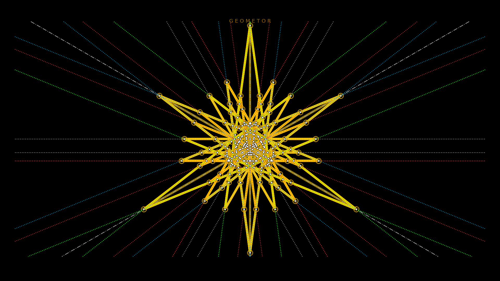

GEOMETOR • model¶
geometor.model is the foundational library for the GEOMETOR initiative.
At the core of the module is the Model class which establishes the field
and methods of operation for creating the geometric constructions while maintaining integrity.
The field might be easy to consider as a Cartesian grid. But in reality, it is an ordered set of information and operations. Points are the information. Lines and circles are the operations.
In our system, all geometric elements of the Model are defined as Sympy Geometry
objects. This means a Point can be defined as a pair of any algebraic
Sympy Expressions that can be evaluated into a floating point value.
Line and Circle are each defined by two points. So each construction
must begin with at least two given points at the start. As lines and circles
are added, intersection points are discovered with previous lines and circles
and added to the model, so they may be used with new lines and circles.
There are three main operations of the Model:
set_point
construct_line
construct_circle
The major responsibilities of the Model:
deduplicate
when elements are added to the model, we check to see if they already exist. This is particularly important for intersection points that often coincide with exisitng points.
clean values
discover intersections
save to and load from json
maintain a set of related info for each element:
ancestral relationships
establish labels for elements
classes for styles
All of the plotting functionality has moved to GEOMETOR render. However, there are several report functions in the this module:
report_summary
report_group_by_type
report_sequence